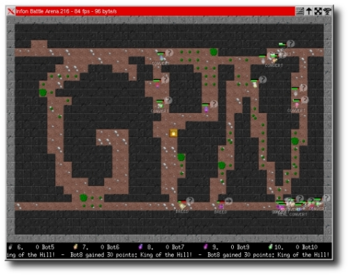

About
Infon Battle Arena is a programming game. You control your creatures using the Lua programming language and let them compete for food and survival. Play online against other players! It is like corewars on steroids.
Screenshot
Example code
This code will display a small "Hello!" below your creatures.function Creature:main() self:screen_message("Hello!") endSee the documentation to learn more about programming your creatures.
Features
- Network based. Play against others over the Internet!
- Different renderers (2D, 3D, Asciiart) to view the game.
- You'll only need telnet to play the game.
- Update your code while the game is running.
- Demo recording and playback
- Makes heavy use of the Lua programming language
- Opensource (GPL). Download it for free!
Client Download
For other downloads, visit the download page.
Documentation
Head over to the development site for documentation, tutorials, source code and more...
Contact
Mail Florian Wesch <fw@dividuum.de>
Or visit the IRC Channel #infon on irc.freenode.net